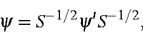
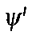
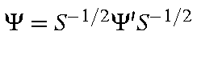
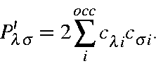

Next: Calculation of Electron Density
Up: Theory
Previous: Failure of NDDO Approximation
Because of the failure of the NDDO approximation, the M.O.s must be re-normalized
before the density is calculated. This is most easily done by performing the
operation

where 
is the original NDDO molecular orbital, and S is the overlap matrix over atomic orbitals.
In practice, it is easier to matrix-multiply
,
as this generates all the M.O.s in one operation.
From these re-normalized M.O.s, a re-normalized density matrix can
be calculated in the normal way:

J. J. P. Stewart
Fujitsu Ltd. 2001